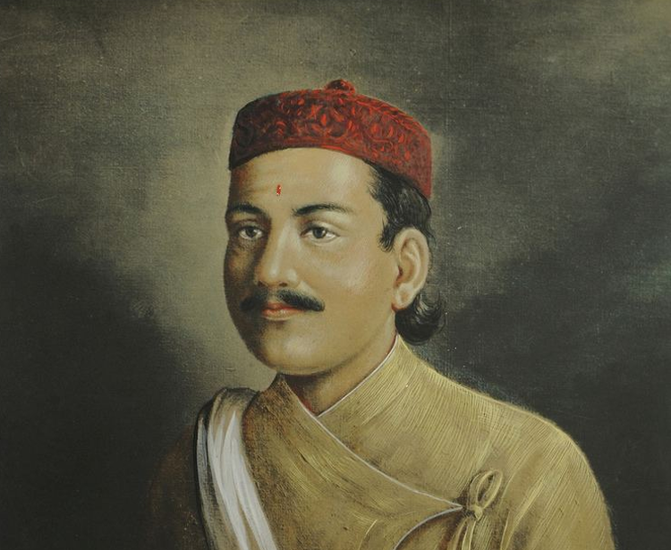

चरीको पीडा
हटाएर जालझेल आज उडे लक्ष्य चुम्छु भनी
मनमा आँट विश्वास बोकी साहसी म बन्छु भनी...
Where code dissolves into rhythm—explore my collection of blogs, technical articles, and heartfelt poetry.
हटाएर जालझेल आज उडे लक्ष्य चुम्छु भनी
मनमा आँट विश्वास बोकी साहसी म बन्छु भनी...
कम्पन दिँदै घुम्थयो महल, मध्यरात हुन्थ्यो जब
रुन्थ्यो कोहि चिच्याउँदै त्यहाँ, ढल्थ्यो अनि रुख तब...
छोडे सोच्नलाई मेरा एकछिन पखेटा जहाँ छ
देख्दा छुन्छु जस्तो लाग्ने त्यो आकाश कहाँ छ ?...
उडाई लग्यो गुँड लाँउन चरी, रित अन्सार
एउटै खुट्टो टेकन पाए ढाक्थे म संसार...

Poetryकला र संगीत, साहित्य, काव्य पूर्खाको मान हो
व्यासको भुमि भानुको देन अमुल्य दान हो...